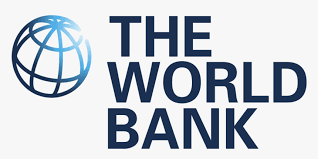
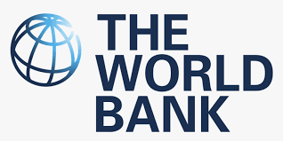

Multilateral
Kerja sama multilateral adalah kolaborasi yang melibatkan lebih dari dua negara atau pihak, seringkali melalui organisasi internasional atau forum global. Tujuan utama dari kerja sama ini adalah untuk menangani isu-isu global yang memerlukan upaya kolektif, seperti perubahan iklim, perdagangan internasional, keamanan global, dan kesehatan. Kerja sama multilateral memungkinkan negara-negara untuk berbagi sumber daya, pengetahuan, dan teknologi, serta merumuskan kebijakan bersama untuk mengatasi tantangan global yang kompleks.
Keuntungan Kerja Sama Multilateral
Efektivitas dan Efesiensi:
Kerja sama multilateral memungkinkan negara-negara untuk menangani isu-isu global secara lebih efektif dan efisien. Dengan bekerja bersama, negara-negara dapat mengurangi duplikasi upaya dan memanfaatkan sumber daya secara optimal.Solidaritas Global:
Kerja sama ini mempromosikan solidaritas dan saling pengertian antar negara. Melalui dialog dan diplomasi, negara-negara dapat membangun hubungan yang lebih erat dan bekerja sama untuk mencapai tujuan bersama.Berbagi Beban:
Negara-negara dapat berbagi beban dalam menangani tantangan global. Misalnya, dalam penanggulangan bencana, negara-negara dapat memberikan bantuan finansial, teknis, dan logistik kepada negara yang terkena dampak.Keberlanjutan:
Kerja sama multilateral sering kali berfokus pada isu-isu keberlanjutan, seperti perubahan iklim dan konservasi lingkungan. Melalui perjanjian internasional, negara-negara dapat berkomitmen untuk tindakan bersama yang berkelanjutan dan ramah lingkungan.
Contoh Konkret: Perserikatan Bangsa-Bangsa (PBB)
Perserikatan Bangsa-Bangsa (PBB):
PBB adalah organisasi internasional yang terdiri dari hampir seluruh negara di dunia. Didirikan pada tahun 1945, PBB bertujuan untuk memelihara perdamaian dan keamanan internasional, mempromosikan pengembangan ekonomi dan sosial, serta melindungi hak asasi manusia. Melalui berbagai badan dan programnya, PBB mengoordinasikan upaya global dalam menangani isu-isu seperti misi perdamaian, pengembangan ekonomi, dan penanggulangan bencana.
Protokol Kyoto:
Protokol Kyoto adalah perjanjian internasional di bawah payung PBB yang bertujuan untuk mengurangi emisi gas rumah kaca dan memerangi perubahan iklim. Ditandatangani pada tahun 1997 dan mulai berlaku pada tahun 2005, Protokol Kyoto menetapkan target pengurangan emisi yang mengikat secara hukum bagi negara-negara industri. Melalui mekanisme perdagangan emisi dan kerjasama teknologi, Protokol Kyoto mendorong negara-negara untuk mengambil langkah-langkah konkret dalam mengurangi jejak karbon mereka.
Contoh Lain Kerja Sama Multilateral:
Organisasi Perdagangan Dunia (WTO):
WTO adalah organisasi internasional yang mengatur dan memfasilitasi perdagangan global. Didirikan pada tahun 1995, WTO menciptakan aturan-aturan perdagangan yang adil dan transparan serta menyelesaikan sengketa perdagangan antar negara anggota. Tujuannya adalah untuk menciptakan sistem perdagangan multilateral yang terbuka dan berkeadilan.
Bank Dunia (World Bank):
Bank Dunia adalah lembaga keuangan internasional yang menyediakan bantuan keuangan dan teknis kepada negara-negara berkembang. Bank Dunia mendukung proyek-proyek yang bertujuan untuk mengurangi kemiskinan, meningkatkan infrastruktur, dan mempromosikan pembangunan berkelanjutan. Melalui kerja sama multilateral, Bank Dunia membantu negara-negara mencapai tujuan pembangunan mereka.


 
